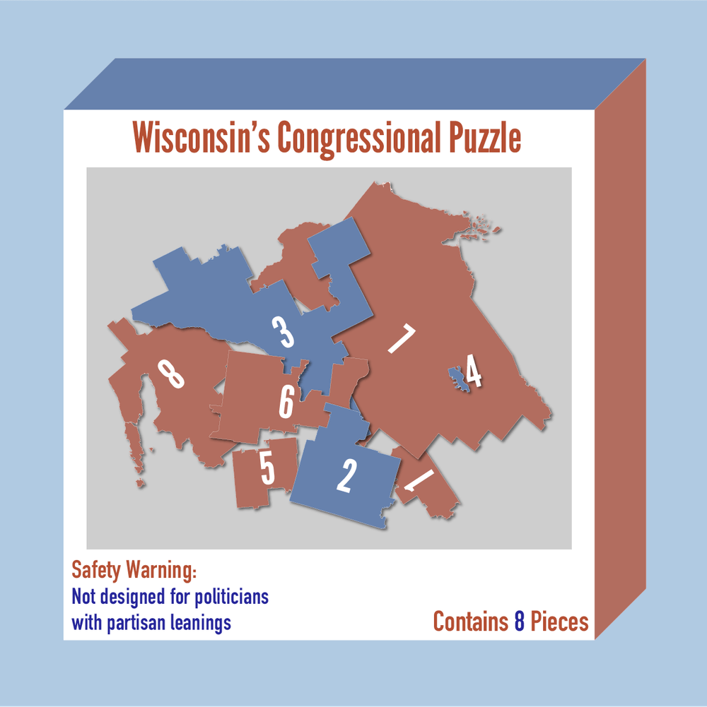
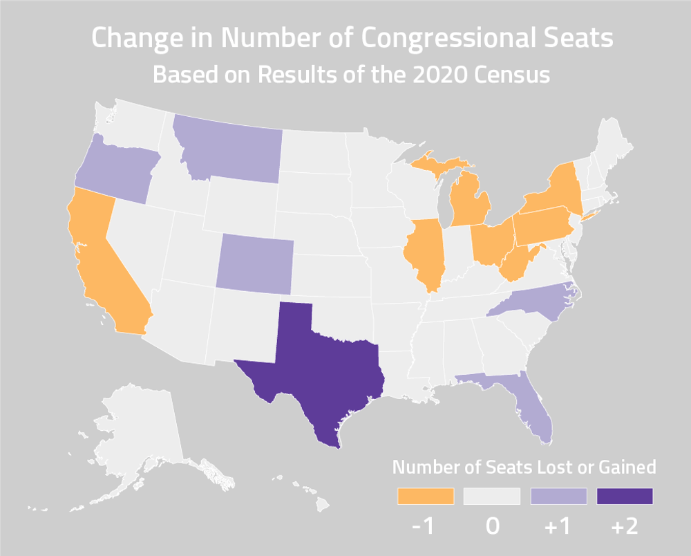
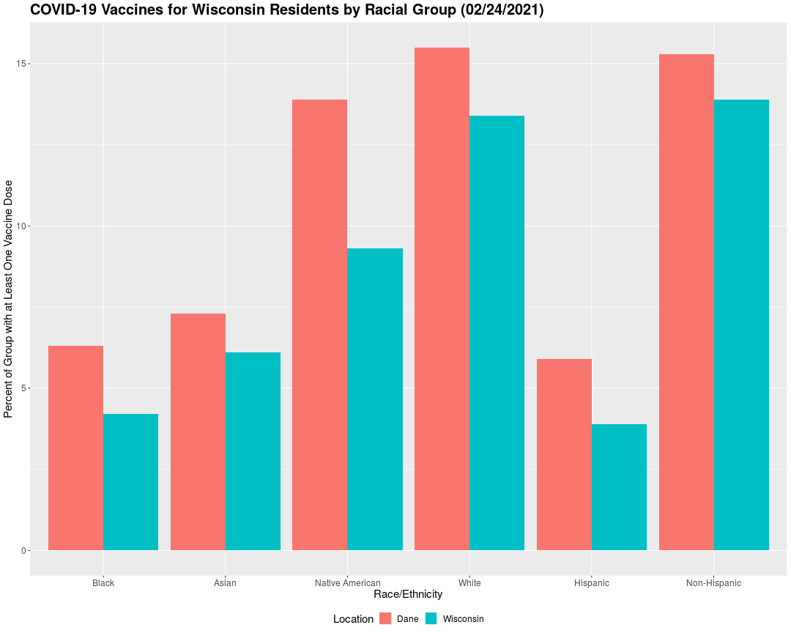
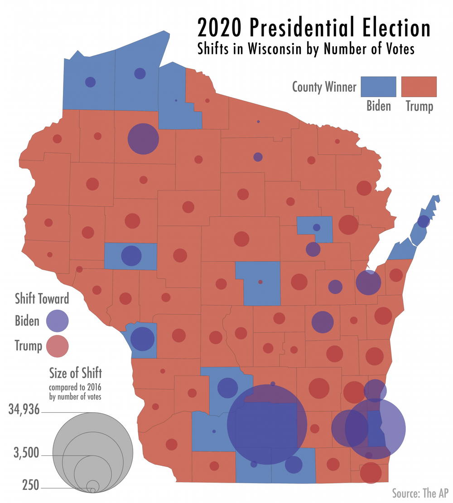
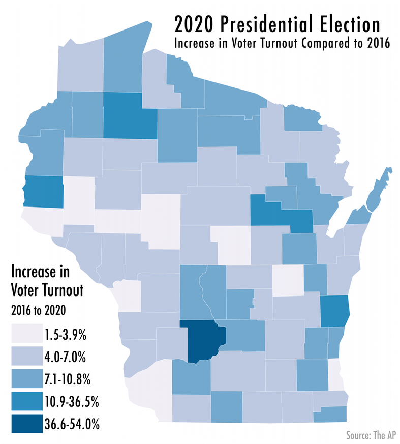

Maps for The Daily Cardinal Newspaper
I am the head cartographer for the graphics team of The Daily Cardinal student newspaper at UW-Madison. I produce most of the maps and charts for the newspaper, such as the Wisconsin gerrymandering map above.

When creating maps within one organization, I use consistent styles and projections to establish a theme for the newspaper, as seen in the marijuana map above and the congressional redistricting map below. Generally, I select color schemes from Color Brewer with neutral backgrounds. I produce all maps in QGIS and Illustrator, and have expediated the process by creating templates.
In addition to maps, I also make graphs and charts for the newspaper. The graphic below was produced in R.
Three of my maps on the 2020 Presidental Election results from Wisconsin won an honorable mention for Infographic (Group A) in the 2020 WNAF Collegiate Better Newspaper Contest.
More of my work for The Daily Cardinal can be found here.
